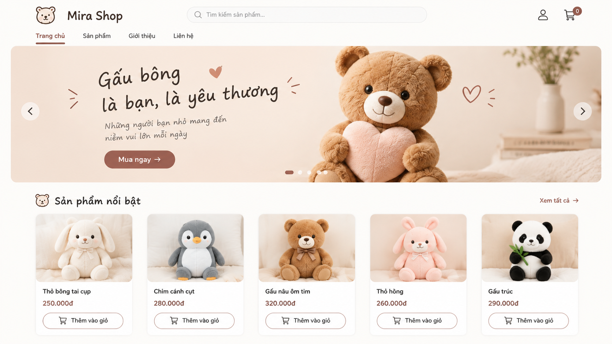
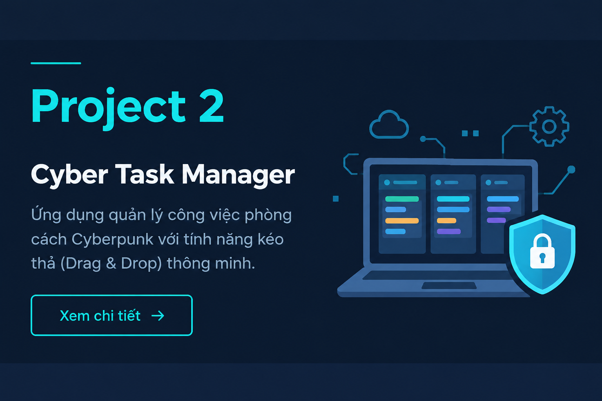
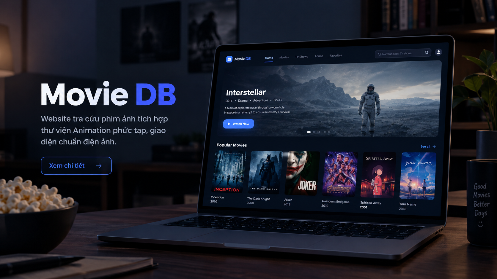

Hệ Thống E-Commerce
Ứng dụng mua sắm trực tuyến với đầy đủ tính năng giỏ hàng, xác thực người dùng và thanh toán.
Xin chào, tôi là
Tôi là một Frontend Developer đam mê thiết kế UI/UX và phát triển các sản phẩm kỹ thuật số đột phá. Chuyên môn của tôi là tạo ra các trải nghiệm người dùng tuyệt vời với kiến trúc mã nguồn tối ưu.
Khám Phá Dự ÁnXin chào! Tôi là Hiếu, người thích tạo ra những thứ sống động trên Internet. Sự quan tâm của tôi đến lập trình web bắt đầu từ khi tôi nhận ra mình có thể kết hợp tính logic của code và tính nghệ thuật của thiết kế.
Định hướng hiện tại của tôi là trở thành một Senior Frontend Developer. Tôi dành phần lớn thời gian để học hỏi các công nghệ mới, viết mã sạch (clean code) và tối ưu hóa hiệu suất website.
Khi không ngồi trước màn hình máy tính, tôi thường tìm hiểu về an ninh mạng hoặc tham gia các cộng đồng mã nguồn mở.

Ứng dụng mua sắm trực tuyến với đầy đủ tính năng giỏ hàng, xác thực người dùng và thanh toán.

Ứng dụng quản lý công việc phong cách Cyberpunk với tính năng kéo thả (Drag & Drop) thông minh.

Website tra cứu phim ảnh tích hợp thư viện Animation phức tạp, giao diện chuẩn điện ảnh.
Bạn có ý tưởng dự án hoặc cơ hội hợp tác? Hãy để lại lời nhắn, tôi sẽ phản hồi sớm nhất có thể.
Mô tả chi tiết dự án sẽ hiển thị ở đây...